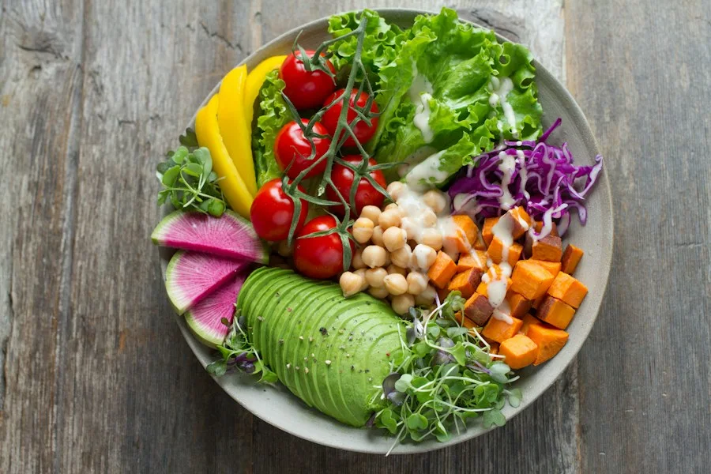
01 / NO DIA A DIA“Sinto falta de mastigar com tranquilidade.”
Um dente ausente ou uma prótese que incomoda pode mudar até a escolha do que colocar no prato.
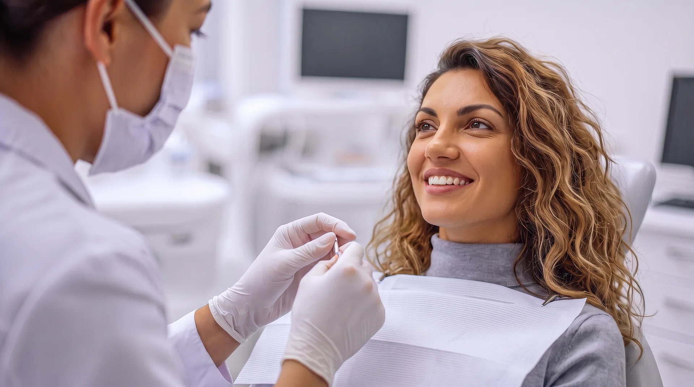
ODONTOLOGIA INTEGRADA EM TUBARÃO, SC
Da reposição de um dente ao alinhamento do sorriso, cada tratamento precisa considerar você por inteiro.
Na KR Odontologia, diferentes especialidades, tecnologia e laboratório de prótese próprio se encontram para cuidar da sua saúde bucal em um só lugar.
O QUE TROUXE VOCÊ ATÉ AQUI?
Comer o que gosta. Sorrir em uma fotografia. Conversar sem levar a mão à boca.
O motivo para procurar um dentista pode aparecer de muitas formas. Entender o que incomoda você é o começo do cuidado.

01 / NO DIA A DIAUm dente ausente ou uma prótese que incomoda pode mudar até a escolha do que colocar no prato.
A posição, a cor ou o formato dos dentes podem ser o motivo pelo qual você evita mostrar o sorriso.
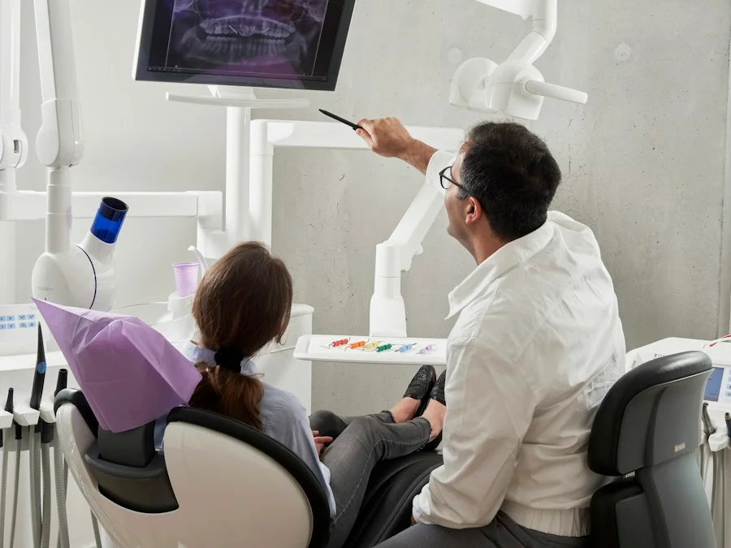
03 / NO SEU TEMPOVocê pode procurar a KR para uma avaliação, mesmo sem saber qual tratamento precisa.
O primeiro passo pode ser uma conversa.
Quero entender minhas possibilidadesCOMO PODEMOS AJUDAR
O cuidado pode envolver uma especialidade ou a combinação de várias. A avaliação ajuda a entender suas necessidades e definir por onde começar.
Agendar uma avaliaçãoPara quem precisa repor dentes ou avaliar uma prótese, considerando a mastigação, a aparência do sorriso e a saúde bucal.
Conversar sobre esse cuidadoPara avaliar a posição dos dentes e a mordida, conhecer as alternativas de alinhamento e entender qual abordagem pode ser indicada.
Conhecer as possibilidadesPara quem deseja clarear os dentes com orientação profissional e uma indicação adequada às condições do seu sorriso.
Saber por onde começarAvaliação de queixas relacionadas à mandíbula, às dores na face e ao apertamento ou ranger dos dentes.
Conversar sobre meu incômodoCuidado com a parte interna do dente, a partir de uma avaliação que identifique a necessidade do tratamento.
Agendar uma avaliaçãoPrevenção, acompanhamento e tratamentos para cuidar dos dentes e das gengivas ao longo da vida.
Cuidar da minha saúde bucalESTRUTURA QUE FAZ PARTE DO CUIDADO
Reunir especialidades, exames e laboratório na própria clínica faz parte da proposta da KR desde o início. Uma estrutura que apoia o planejamento e as diferentes etapas do tratamento.
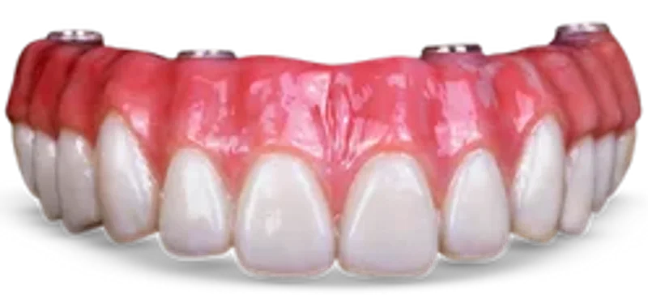
Proximidade entre o trabalho clínico e a confecção das peças protéticas.
Um recurso de imagem disponível no mesmo espaço do atendimento, conforme a necessidade de cada caso.
Registro digital dos dentes para apoiar o planejamento dos tratamentos em que esse recurso é indicado.
Imagens que ajudam você a visualizar detalhes da sua boca e acompanhar as explicações do profissional.
Uma equipe com áreas de atuação que se complementam no cuidado com a saúde bucal.
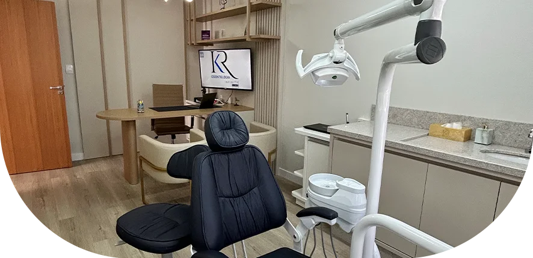
Estrutura real da KR Odontologia
CONHEÇA A KR ODONTOLOGIA
A KR nasceu em Tubarão, em 2012, com uma proposta: reunir diferentes especialidades para que o paciente pudesse realizar seu tratamento em um só lugar.
Essa ideia continua orientando o nosso trabalho. Cada profissional contribui com seu conhecimento para um cuidado que considera a saúde, a função e a estética do sorriso.
Buscamos atualização profissional, recursos tecnológicos e escolhas fundamentadas em conhecimento científico. E valorizamos algo essencial em qualquer consulta: que você compreenda o que está sendo proposto.
Falar com a nossa equipe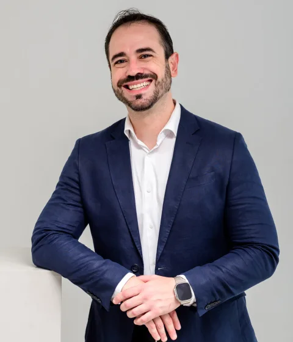
DTM e Dor Orofacial
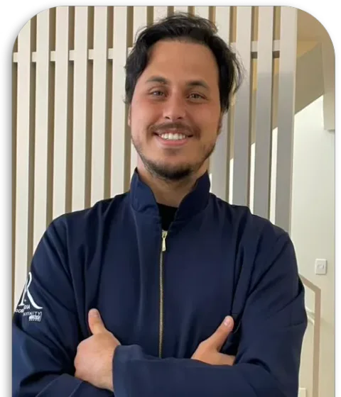
Implantodontia
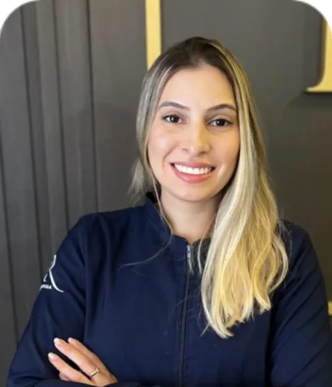
Prótese Dentária
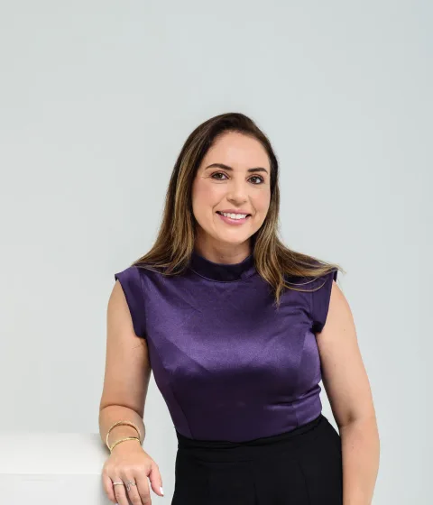
Harmonização Facial
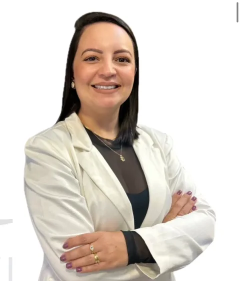
Endodontia
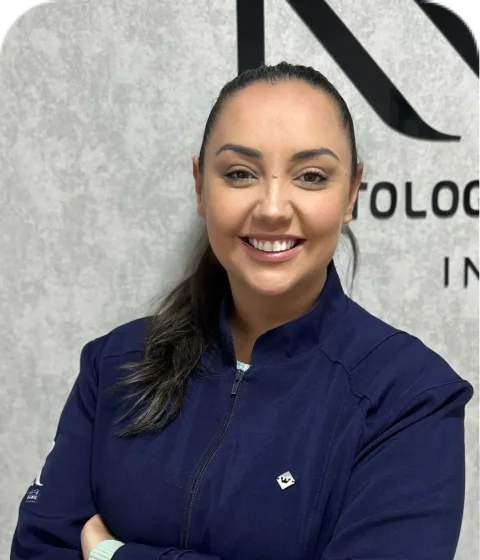
Prótese Dentária
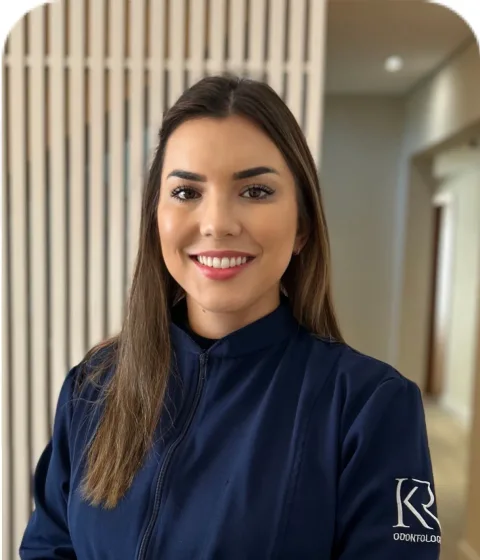
Técnica em Prótese Dentária
SEU PRIMEIRO PASSO
Conte o que incomoda você. A avaliação é o momento de conhecer sua saúde bucal, conversar sobre suas expectativas e entender as possibilidades de cuidado.
Ao entrar em contato, explique o motivo da sua visita e tire as primeiras dúvidas sobre o atendimento.
Na avaliação, o profissional examina sua saúde bucal e verifica quais informações são necessárias para planejar o cuidado.
Converse sobre as opções indicadas, as etapas envolvidas e as dúvidas que precisam ser esclarecidas antes de começar.
Com o plano definido, o tratamento segue conforme as necessidades do seu caso.
ANTES DE AGENDAR
Uma dúvida pode ser o começo da conversa. Nossa equipe pode ajudar você a entender como começar.
Tirar uma dúvida pelo WhatsAppSim. Você pode começar contando o que sente ou o que gostaria de mudar. A avaliação ajuda a identificar suas necessidades e orientar o cuidado.
A clínica reúne diferentes áreas da odontologia. Quando necessário, o planejamento pode envolver profissionais de especialidades complementares.
Essa indicação depende de uma avaliação individual. A consulta permite conhecer sua condição bucal e conversar sobre as alternativas para o seu caso.
Agende uma avaliação para conhecer as possibilidades de tratamento ortodôntico e verificar se os alinhadores são indicados para você.
Entre em contato com a equipe para informações sobre agendamento. As necessidades e o planejamento do tratamento são definidos após a avaliação.
ESPERAMOS VOCÊ EM TUBARÃO
Um espaço para receber você,
no bairro Vila Moema, em Tubarão.
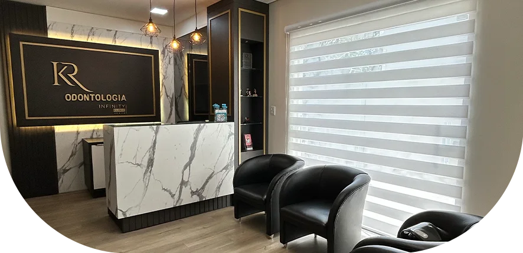
Segunda a sexta, das 9h às 19h
Ver como chegarVAMOS CONVERSAR?
Seja para acompanhar sua saúde bucal, conversar sobre um incômodo ou planejar uma mudança no sorriso, a nossa equipe está aqui para receber você.
Agendar minha avaliação